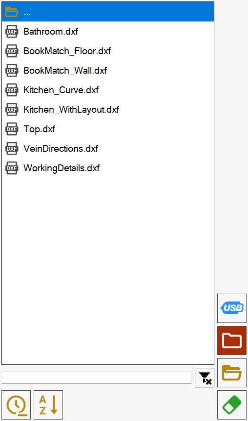
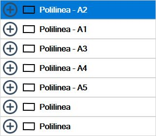

In diesem Bereich können Werkstücke durch Importieren von DXF-Dateien erstellt werden.

Dateiliste
Im linken Fensterbereich befindet sich eine Liste mit allen Ordnern und DXF-Dateien im aktuell ausgewählten Pfad.

Das Element am Anfang der Liste

ermöglicht die Rückkehr zum übergeordneten Ordner des aktuellen Ordners.
Anfangs wird die Liste der DXF-Dateien im Arbeitsordner des PCs angezeigt. Der Ordner kann über die entsprechenden Schaltflächen rechts neben der Dateiliste geändert werden.
 | USB-Speicher |
 | Arbeitsordner |
 | Ordner durchsuchen |
 | Datei löschen |
Angezeigte Dateien sortieren und filtern
Die Elemente unter der Liste dienen zum Anwenden von Filtern und zum Sortieren der angezeigten Dateien.

Im oberen Bereich des Bilds befindet sich eine Suchleiste, über die Dateien nach Name gefiltert werden können, sodass nur Dateien angezeigt werden, die den eingegebenen Text enthalten.
In diesem Bereich des Bildschirms befinden sich außerdem folgende Schaltflächen:
Filter löschen | |
 | Nach Datum sortieren |
 | Nach Name sortieren |
Die Suche nach Name gilt ausschließlich für Dateien im Ordner und nicht für eventuell vorhandene Unterordner.
Die Sortierung nach Name und Datum gilt dagegen für jedes Listenelement; Ordner werden jedoch immer vor Dateien angezeigt.
Vorschau
Bei Auswahl einer Datei wird im Bereich in der Bildschirmmitte eine Vorschau der Zeichnung angezeigt, damit der Inhalt sofort erkannt werden kann.

Mit der Vorschau kann sowohl durch Ziehen des Inhalts als auch über die Schaltflächen rechts davon interagiert werden.
 | Zoom vergrößern |
 | Zoom verkleinern |
 | Ansicht zurücksetzen |
Zusätzliche Schaltflächen
Mit den folgenden Schaltflächen können außerdem zusätzliche Aktionen ausgeführt werden.
 | Detailbedienfeld |
Detailbedienfeld
Wenn eine Datei ausgewählt wurde, kann das „Detailbedienfeld“ geöffnet werden, um die DXF-Eigenschaften anzuzeigen. Dies erfolgt über die folgende Schaltfläche rechts neben der Vorschau:
Nach dem Öffnen wird zusätzlich zur Liste der Werkstücke, aus denen die ausgewählte DXF-Datei besteht, das folgende Bedienfeld angezeigt:

Layout-Sichtbarkeit verwalten
Im oberen Bereich dieses Bedienfelds werden die Layouts als Kontrollkästchen angezeigt, die beliebig aktiviert oder deaktiviert werden können:

Mit dem ersten Element dieser Layout-Liste kann die Anzeige aller Layouts aktiviert oder deaktiviert werden.
Seitenbedienfeld
Schaltflächen für Sichtbarkeit und Padding
Neben den bereits zuvor gezeigten Schaltflächen zum Ändern der Zoomstufe und zum Zurücksetzen des Zooms sind zwei neue Schaltflächen vorhanden:

 | Ausgewähltes Werkstück hervorheben |
 | Ansicht verschieben |
Polylinienliste
Im mittleren rechten Bereich des Bedienfelds werden die Werkstücke, aus denen die ausgewählte DXF-Datei besteht, als Polylinien angezeigt.
Wenn einer der in der Liste vorhandenen Werte ausgewählt wird, wird das entsprechende in der Vorschau sichtbare Werkstück gelb hervorgehoben.

Wenn die Schaltfläche neben jedem Werkstück gedrückt wird, wird die Liste der Polylinien sichtbar, aus denen das Werkstück besteht.
Außerdem kann eine einzelne Polylinie der DXF-Datei hervorgehoben werden, indem die entsprechende Zeile in der Liste ausgewählt wird:

Untere Schaltflächen
Diese Schaltflächen befinden sich im unteren Bereich der Seitenleiste.

 | Vorherige offene Polylinie suchen |
 | Vorherige offene Polylinie suchen |
Im folgenden Beispiel wurde das Detailbedienfeld für eine DXF-Datei geöffnet, die einige Werkstücke aus offenen Polylinien enthält; diese werden in der Liste rot angezeigt: